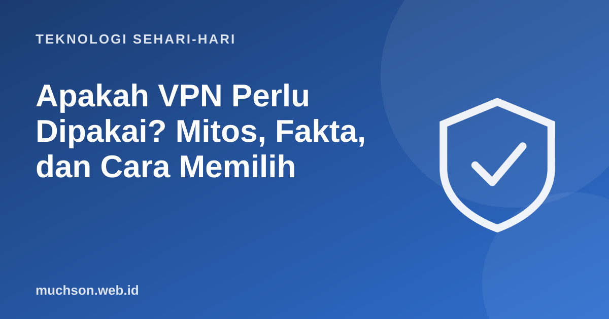

Beranda › Artikel › Teknologi Sehari-hari
Teknologi Sehari-hariApakah VPN Perlu Dipakai? Mitos, Fakta, dan Cara Memilih
Iklan VPN menjanjikan anonimitas total dan perlindungan dari peretas. Kenyataannya, VPN berguna untuk hal tertentu dan tidak menjawab banyak hal lain. Memahami batasnya membantu Anda memutuskan apakah Anda membutuhkannya.

Apa yang dilakukan VPN?
Mitos dan fakta
Kapan VPN benar-benar berguna
- Memakai Wi-Fi publik yang tidak tepercaya dan ingin menambah perlindungan.
- Mengakses jaringan kantor dengan aman dari jarak jauh (VPN perusahaan).
- Menyembunyikan aktivitas dari penyedia internet lokal atau pengelola jaringan.
- Mengakses layanan sesuai ketentuan layanan dan hukum yang berlaku di wilayah Anda.
Soal kepercayaan
VPN memindahkan kepercayaan dari penyedia internet ke penyedia VPN. Anda harus memercayai penyedia VPN tersebut. Pilih dengan hati-hati dan hindari layanan gratis yang tidak jelas.
Tanya jawab
Apakah VPN legal?
Di banyak tempat legal, tetapi penggunaannya untuk aktivitas ilegal tetap melanggar hukum. Periksa aturan di wilayah Anda.
Apa bedanya VPN dan mode incognito?
Mode incognito hanya tidak menyimpan riwayat di perangkat Anda. VPN mengenkripsi lalu lintas dan mengubah alamat IP yang terlihat.
Apakah VPN menjamin aman di Wi-Fi publik?
Membantu, tetapi bukan jaminan. Tetap hindari memasukkan data sangat sensitif dan perhatikan tanda phishing.